Two proteins bind when their surfaces fit: a large area in contact, no overlap. Finding that fit from the two shapes alone is docking. Katchalski-Katzir and colleagues (1992) saw that the fit of every shift is one correlation, so the FFT of the cross-correlation unit scores them all at once.
A grid score: a thin surface layer that rewards contact, a core that punishes overlap.
One FFT per angle, and a loop over the angles.
Choosing the core value, the layer, the grid and the angle step; what rigid docking gets wrong.
In 3D: the same recipe with six unknowns and a far longer loop (pictures and counts only).
Everything we compute is 2D: synthetic shapes stand in for the molecules.
Slides titled The math give the formulas and proofs; the ideas are complete without them.
A receptor (the bigger molecule, kept fixed) and a ligand (moved).
Find the position and angle of the ligand where the two surfaces touch over a large area without overlapping.
In 2D: three unknowns, two shifts and one angle.
Real proteins are 3D: the same problem with six unknowns (three shifts, three angles) and a far longer loop over the angles. The last slides come back to this.
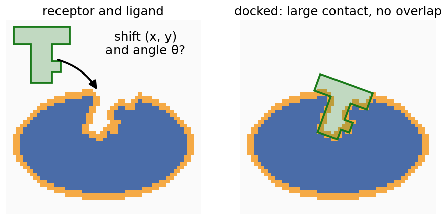
Fit as a score on a grid
Put both molecules on a grid (Katchalski-Katzir et al. 1992):
receptor: a thin surface layer around it gets 1; its own cells, the core, get a large negative value \rho (e.g. −9); everything else 0;
ligand: 1 on its own cells.
Lay the ligand on the receptor and add up the receptor’s values under it: every ligand cell on the surface layer adds 1 (contact), every cell inside adds \rho (clash).
The surface layer is the receptor dilated minus the receptor itself (erosion and dilation).
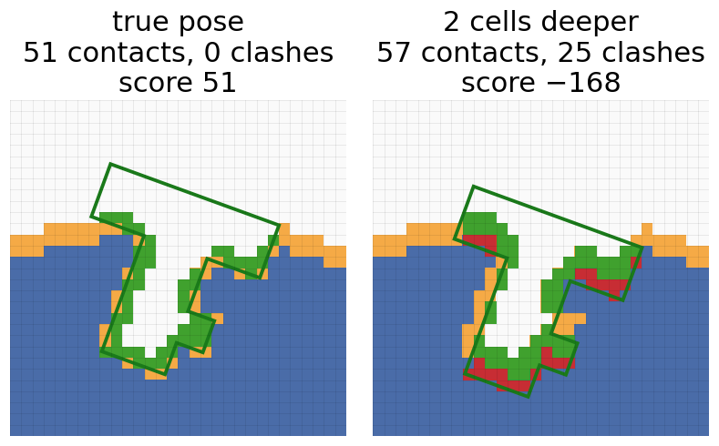
By hand: a receptor of eight cells
Receptor a = (\rho, \rho, \rho, 1, 0, 0, 0, 0) with \rho = -9: core in cells 0–2, surface layer in cell 3. A ligand of two cells, placed on d and d + 1:
S(1) = \rho + \rho = -18: deep inside;
S(2) = \rho + 1 = -8: half inside;
S(3) = 1 + 0 = 1: touching;
S(4) = 0: in empty space.
The best pose touches the surface without entering it. The score for every d is a sum of products, \sum_x a(x)\,b(x - d): a correlation.
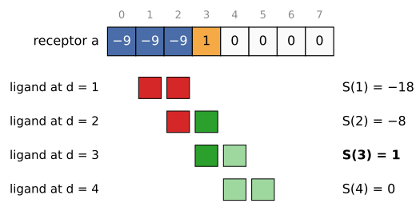
Every shift at once
The score of all shifts for one ligand angle is a correlation of two grids, so the FFT computes it in one go (FFT correlation): transform both, multiply one by the conjugate of the other, transform back.
The result is a score map: one number per ligand position. Its highest point is the best shift at that angle.
At the right angle the map has a clear peak in the pocket (51); at a wrong angle the best place is only a flat stretch of surface (20).
It is template matching (sliding and scoring) with a different score: not brightness agreement, but contact minus clash.
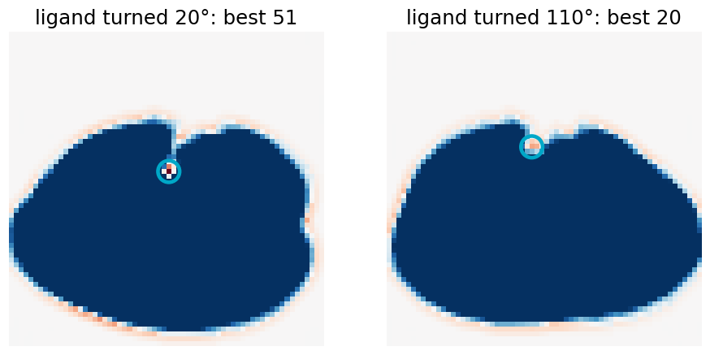
The math: docking as correlation
With the receptor grid a and the ligand grid b_\theta (the ligand turned by \theta, its centre at cell 0), the score of the shift \mathbf d is S_\theta(\mathbf d) = \sum_{\mathbf x} a(\mathbf x)\, b_\theta(\mathbf x - \mathbf d). This is the cross-correlation of the FFT registration day, so by the correlation theorem \hat S_\theta(\mathbf k) = \hat a(\mathbf k)\,\overline{\hat b_\theta(\mathbf k)}, \qquad S_\theta = \text{inverse DFT of } \hat a\,\overline{\hat b_\theta}.
\hat a does not depend on \theta: computed once. Each angle costs the ligand’s FFT and one inverse FFT.
The DFT is circular: zero-pad both grids so that a ligand near one border never wraps onto the receptor at the other (the receptor sits in the middle of a grid twice its size).
Docking as pseudocode
a = receptor grid: 1 on the surface layer, ρ in the core, 0 elsewhere # zero-padded
A = FFT(a) # once
for every angle θ = 0, Δθ, 2Δθ, … < 360°:
b = ligand turned by θ, 1 on its cells, its centre at cell (0, 0)
S = real part of the inverse FFT of A · conj(FFT(b))
keep the few highest local maxima of S, with θ
sort all kept poses by score; drop near-duplicates (close in position and angle)
report the top few poses
Two FFTs per angle; the receptor’s FFT is reused.
The coding exercise writes this loop.
Try it: key and lock
The loop over angles
One score map per angle; the best score per angle shows where the fit is. Here a single sharp peak near 20°: the key fits one way only.
The angle step sets what can be found. With 30° steps the search looks at 0° and 30°, not 20°: at 0° the key clashes in the pocket, at 30° it fits only half-way out (23), and the top pose is a flat contact on the underside (28).
The step needed depends on how far the ligand reaches: a turn by 10° moves a point 20 Å from the centre by 20 \cdot 10 \cdot \pi/180 \approx 3.5 Å, more than an atom’s radius.
The grid spacing plays the same role for shifts: at 3 units per cell the key’s tooth disappears and the search misses the fit.
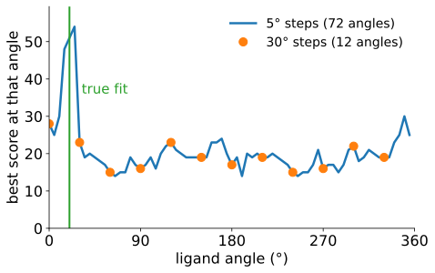
The math: what it costs
R angles, an M-cell grid (after padding), a ligand of L cells. One complex FFT costs about 5M\log_2 M operations:
FFT route: (1 + 2R)\cdot 5M\log_2 M + 6RM, i.e. \mathcal O(R\,M\log M).
Brute force, every cell of both grids for every shift: 2M^2 per angle, \mathcal O(R\,M^2).
Brute force skipping the empty ligand cells: M L additions per angle.
128^2 grid, 5° steps (R = 72): FFT route 1.7\cdot10^8, dense brute force 3.9\cdot10^{10} (220 times more). Skipping empty cells, a 155-cell ligand needs 1.8\cdot10^8: in 2D with a small ligand, the plain sum is competitive. In 3D the ligand has thousands of cells and M\log_2 M grows much more slowly than ML: there the FFT wins by far.
Choosing ρ and the surface layer
ρ too mild (−0.1): a clash costs almost nothing, the ligand sinks in where it can cover more surface: 67 contacts, 44 clashes, at a wrong angle. The true fit drops to second place.
No surface layer: nothing rewards contact; every pose that does not clash scores 0, and the search has nothing to rank.
A thick layer (3–4 cells) rewards poses that only come near the surface: a broader, less precise peak.
Grid, layer and \rho are knobs that trade tolerance against precision.
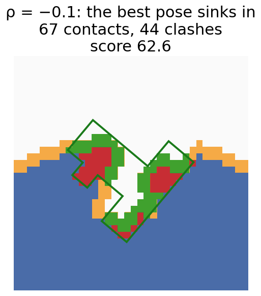
Try it: ρ, layer and angle step
Two scores in one FFT
A complex grid holds two real grids: real part and imaginary part.
Give both molecules a surface layer s and a core c: receptor s + i\,c, ligand s - i\,c. The real part of one complex correlation is then surface · surface − core · core: contact minus clash, in one FFT per angle.
This idea, and the original real-valued score, are behind the classic programs (Gabb et al. 1997; ZDOCK, Chen et al. 2003).
Other terms are more correlations added to the score: electrostatics (the receptor’s potential on a grid times the ligand’s charges), desolvation, contact preferences of residue types.
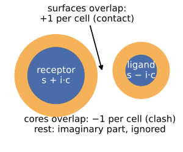
The math: the complex score
Receptor a = s_R + i\,c_R, ligand b = s_L - i\,c_L (all four real). The usual correlation conjugates the ligand: \sum_{\mathbf x} a(\mathbf x)\,\overline{b(\mathbf x - \mathbf d)} = \sum_{\mathbf x} (s_R + i\,c_R)(s_L + i\,c_L)(\mathbf x, \mathbf x - \mathbf d), whose real part is \sum_{\mathbf x} s_R(\mathbf x)\,s_L(\mathbf x - \mathbf d) \;-\; \sum_{\mathbf x} c_R(\mathbf x)\,c_L(\mathbf x - \mathbf d). Scaling the cores by \sqrt w weights a clash by w. With \hat S = \hat a\,\overline{\hat b} as before: one forward FFT per angle for the ligand, one inverse, the same cost as the plain score, with two terms instead of one. (Exercise B7.)
What rigid docking gets wrong
Proteins are not rigid: side chains turn, loops move when the partner binds. Docking two separately determined structures, the true pose often has a few clashes.
A strict core rejects it. In the demo: a flexible bump on the key sticks into the pocket wall; at the true pose 5 clashes give 53 − 45 = 8, and the fit is not even in the top five.
Softer scores (smaller |\rho|, thinner core, coarser grid) tolerate this, at the price of more false poses: with \rho = -1 the fit is first again (52), but ρ = −0.1 lets the ligand sink in.
So real pipelines keep thousands of poses from the FFT search and re-rank them with finer models (clustering, energy refinement, flexible side chains).
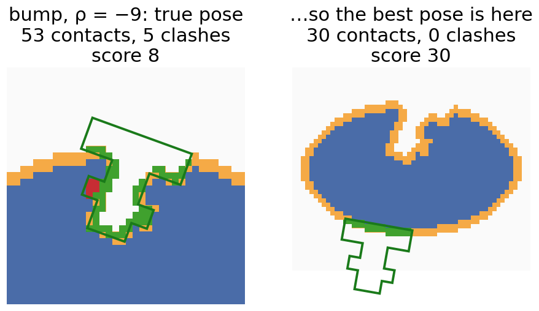
Try it: a flexible bump
The same loop elsewhere in the course
The generalised Hough transform (GHT) also loops over angles; per angle it collects votes from edge points instead of correlating grids.
Template matching with NCC (sliding and scoring) is the same search with a brightness score.
Outlines and Fourier–Mellin (this day) turned the rotation into a shift too, so one FFT covers all angles. Docking cannot: the receptor is not centred on the ligand’s turning point, so it still loops over angles in 2D, and in 3D the loop is the expensive part.
In 3D: same recipe, bigger loop
Atoms instead of pixels: each molecule on a 3D grid of voxels (often about 1 Å apart), with a surface layer and a core.
Six unknowns: three shifts, three angles.
For each ligand orientation: one 3D FFT of the ligand, one inverse; the receptor’s FFT once.
Keep the best shifts of every orientation, then rank and re-rank, as in 2D.
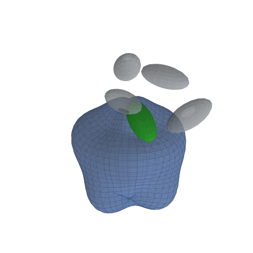
How many orientations?
Three angles cannot be sampled on an even grid of Euler angles: the samples crowd near the poles. Even samplings spread directions over a sphere and add turns about each.
About 8\pi^2/\Delta\theta^3 orientations (\Delta\theta in radians): ≈ 4400 at 15°, ≈ 69 000 at 6°.
One FFT of a 128^3 grid: 5M\log_2 M \approx 2\cdot10^8 operations. Two per orientation at 6°: ≈ 3·10¹³.
That is hours on one core, minutes on a GPU, where the FFTs of many orientations run in parallel (how GPUs work).
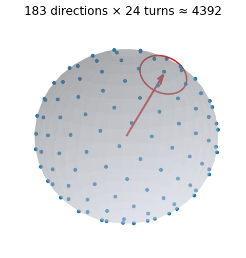
Turning the coefficients instead of the grid
In 2D, a rotation multiplies the angular wave e^{im\theta} by a phase (outlines, Fourier–Mellin): turning costs nothing once the shape is written in such waves.
In 3D the angular waves are spherical harmonics: patterns on a sphere, grouped by degree; degree l has 2l + 1 patterns.
A rotation mixes the few patterns of each degree among themselves, instead of re-gridding the molecule. Docking programs built on this (Ritchie & Kemp 2000) scan rotations with fast transforms too.
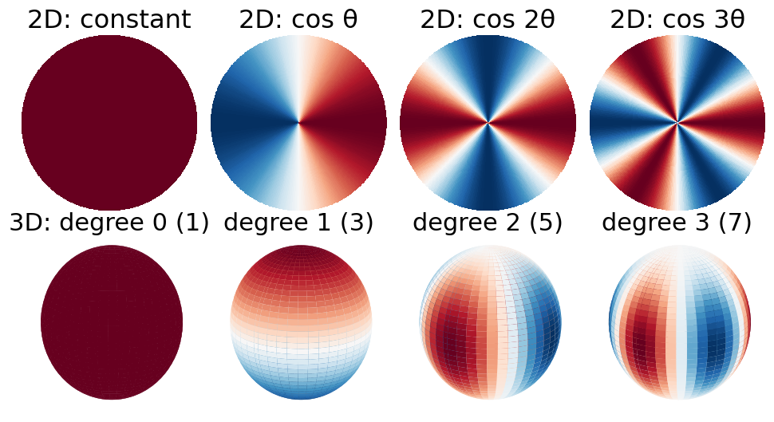
The same machine elsewhere
Template matching in cryo-electron tomograms: a known complex (a ribosome, a proteasome) is searched in a noisy 3D reconstruction of a cell, at every position and orientation, by exactly this loop: one 3D correlation per orientation.
Fitting atomic models into cryo-EM maps: a model of one protein is placed in the density map of a larger assembly by correlating it at every shift and orientation.
Aligning particles in cryo-EM: thousands of noisy views aligned in rotation and shift (Fourier–Mellin shows the 2D version).
Same ingredients: a grid score, one FFT per orientation, a sampling of orientations, re-ranking of the best hits.
Where the field went
Scoring and flexibility remain the hard part: the FFT search is exhaustive, but only as good as its score.
Learned methods now predict many complexes directly from the amino-acid sequences, often more accurately than rigid docking of separate structures.
FFT docking stays as a fast, exhaustive first pass: every pose is looked at, nothing depends on a starting guess, and the cost is known in advance.
The idea outlives the application: any search over shifts of a fixed score is a correlation, and the FFT does every shift at once.
Summary
Docking finds the shift and angle at which two shapes touch over a large area without overlapping.
Grid score: receptor = surface layer (+1) around a core (\rho \ll 0); ligand = 1 on its cells. Contacts count, clashes cost.
For one angle the score of every shift is a correlation: two FFTs, the receptor’s FFT reused. A loop over angles does the rest; zero-pad against wrap-around.
The angle step, grid spacing, layer thickness and \rho set what is found. Too strict misses flexible fits, too soft lets the ligand sink in: keep many poses and re-rank.
In 3D: six unknowns, tens of thousands of orientations, one 3D FFT each; the same loop finds complexes in cryo-EM maps and tomograms.